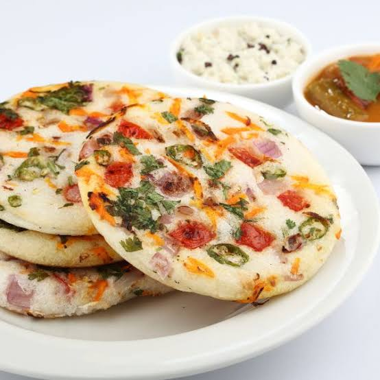

Uthapam Recipe
A savory South Indian pancake made from rice and lentil batter, topped with vegetables.
Ingredients
1 cup rice
1/4 cup urad dal (split black gram)
1/2 cup water (for batter)
1 onion, finely chopped
1 tomato, finely chopped
1 green chili, chopped
1/4 cup bell peppers, chopped
1 tablespoon oil
1/4 teaspoon mustard seeds
Salt to taste

You can watch this video for reference.
Instructions
Soak the rice and urad dal in water for 4-6 hours or overnight.
Grind the soaked rice and dal into a smooth batter, adding water as needed.
Ferment the batter for 8-12 hours in a warm place.
Heat a non-stick pan or tawa. Add oil and mustard seeds. Once the seeds splutter, add the chopped vegetables and sauté for 1-2 minutes.
Pour a ladle of batter onto the pan, spreading it out slightly in a round shape.
Cook on medium heat for 3-4 minutes, until the bottom is golden brown.
Flip the uthapam and cook for 2 more minutes on the other side. Serve hot with chutney or sambar.
Enjoy your delicious Uthapam!